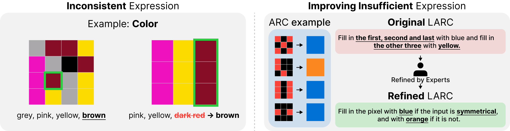
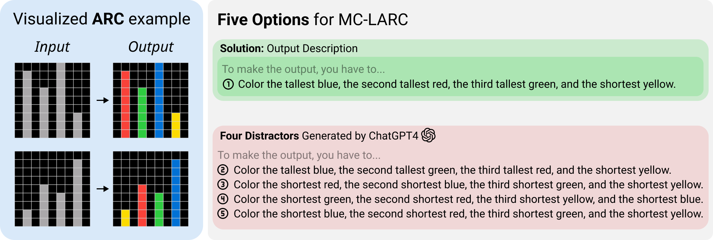
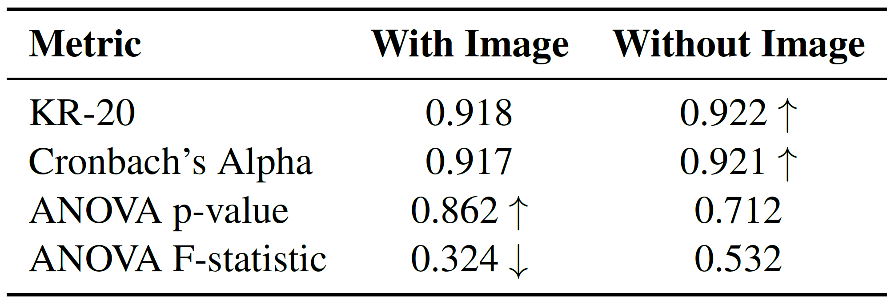
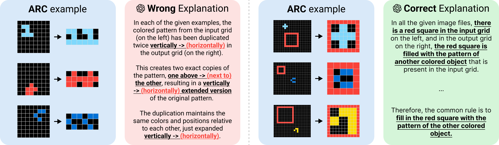
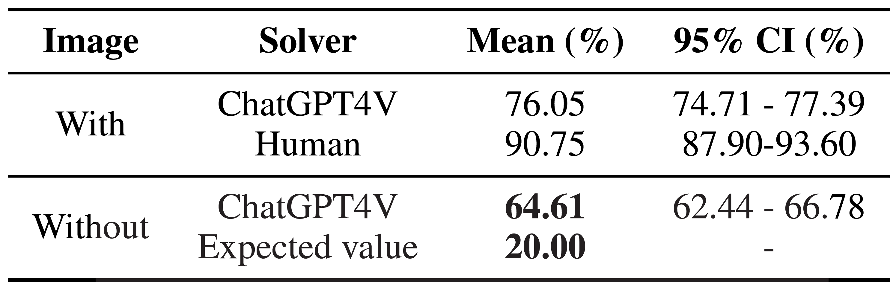
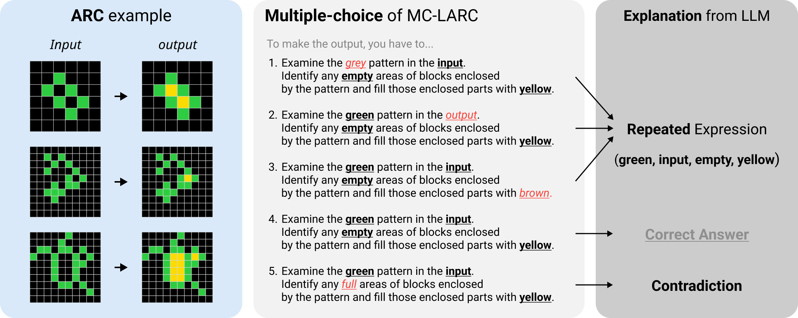

As artificial intelligence reasoning abilities gain prominence, generating reliable benchmarks becomes crucial.
The Abstract and Reasoning Corpus (ARC) offers challenging problems yet unsolved by AI.
While ARC effectively assesses reasoning, its generation-based evaluation overlooks other assessment aspects.
Bloom's Taxonomy suggests evaluating six cognitive stages: Remember, Understand, Apply, Analyze, Evaluate, and Create.
To extend ARC's focus beyond the Create stage, we developed MC-LARC, a multiple-choice format suitable for assessing stages like Understand and Apply in Large Language Models (LLMs).
Our evaluation of ChatGPT4V's analogical reasoning using MC-LARC confirmed that this format supports LLMs' reasoning capabilities and facilitates evidence analysis.
However, we observed LLMs using shortcuts in MC-LARC tasks.
To address this, we propose a self-feedback framework where LLMs identify issues and generate improved options.
MC-LARC: Generation to Selection

The Abstraction and Reasoning Corpus (ARC) has been proposed as a benchmark to evaluate artificial intelligence's reasoning capabilities. ARC consists of 2-5 input-output examples and one test task, with the goal of inferring rules from examples and deducing the answer to the test task. ARC specializes in assessing pure reasoning abilities by reducing the amount of prior knowledge and data required. However, ARC has limitations as an overly difficult benchmark that requires multiple stages of complex reasoning.
According to Bloom's Taxonomy in educational theory, ARC assesses the highest level of 'creation', which encompasses all lower cognitive processes. This makes it challenging to pinpoint which specific stage is problematic when a model fails to solve a task. Moreover, even if the reasoning process is correct, the entire response is marked wrong if there's a slight error in the generated grid. Derived datasets like Mini-ARC and 1D-ARC have not resolved these issues.
To address these limitations, this paper proposes a modified benchmark called MC-LARC. It converts ARC tasks into a multiple-choice language format, assessing the 'understand' and 'apply' areas of Bloom's Taxonomy. Experiments show that the accuracy of Large Language Models (LLMs) on ARC tasks increased from about 10% to 76%, allowing for clearer evaluation of LLMs' inferential abilities. However, it was observed that LLMs used shortcuts to find correct answers based on the form or internal context of the choices. To mitigate this, a self-feedback framework was introduced, enabling LLMs to autonomously improve these shortcuts through a process of solving, articulating, and refining the multiple-choice questions.
MC-LARC: Generation to Selection


MC-LARC is an enhanced dataset that builds upon the original LARC (Language-Annotated Reasoning Corpus) by addressing its issues and introducing new answer options. The creation process involved two main steps: refinement of existing LARC data and generation of new options.
First, experts refined LARC by fixing inconsistent expressions and insufficient explanations. This step addressed problems such as inconsistent color terminology and lack of crucial problem-solving details. Then, using ChatGPT4, they generated incorrect answer choices based on the refined descriptions. This process involved applying specific constraints to ensure the new options were relevant and challenging.
When creating incorrect options, several rules were followed. These included using vocabulary relevant to ARC problems, making options similar in length to the correct answer, and using the same opening sentence format. These constraints helped prevent the generation of irrelevant options or those that would make the correct answer too easy to identify.
As a result, MC-LARC offers more consistent and informative content than the original LARC, with increased similarity between correct and incorrect options. This improvement allows users to focus on key concepts needed for problem-solving, making it harder to select the right answer based solely on format or length. The refined dataset provides a more robust tool for testing and developing AI reasoning capabilities.
Test LLM using MC-LARC
In our experiment with MC-LARC, we used ChatGPT4V to solve 400 tasks, asking it 5 times per problem. We also asked the model to explain its reasoning for each option selection. This approach allowed us to analyze the correlation between answer accuracy and reasoning validity, as well as investigate the model's problem-solving process in both image-present and image-absent conditions.


The results showed that ChatGPT4V achieved about 76% accuracy on MC-LARC tasks, significantly higher than the typical 10% accuracy of LLMs on ARC tasks. We found a strong correlation between answer accuracy and reasoning validity, with negligible instances of correct answers with incorrect explanations or vice versa. In image-absent conditions, the model solved problems by analyzing option consistency and ARC domain compatibility. Reliability tests using KR-20, Cronbach's Alpha, and ANOVA analysis confirmed MC-LARC as a highly consistent and reliable evaluation metric. These findings indicate that MC-LARC effectively evaluates comprehension of ARC images and reduces errors common in direct ARC task solving by LLMs.
Shortcut Problem
We conducted experiments using ChatGPT4V to solve MC-LARC tasks both with and without accompanying ARC images. The model was asked to solve 400 tasks five times each and provide explanations for its choices. We also compared the model's performance to human performance and analyzed its problem-solving approach in image-absent conditions.


Results showed that ChatGPT4V achieved 76.05% accuracy with images and 64.61% without images, compared to human accuracy of 90.75% with images. The high accuracy in image-absent conditions revealed that the LLM was using shortcuts to solve MC-LARC, such as selecting options with repeated expressions and eliminating contradictory ones. This unexpected performance highlighted issues in the option generation process, including an imbalance in word repetition between correct and incorrect options, and the inclusion of contradictory expressions due to lack of context. These findings emphasize the need to improve the choice generation process to fairly evaluate reasoning ability and prevent shortcut solutions.
To Mitigate Shortcut Problem: Self-feedback Method
We conducted experiments to evaluate the effectiveness of our self-feedback framework in improving MC-LARC. We compared LLM performance on the original and refined versions of MC-LARC, both with and without accompanying images. The experiment involved measuring the accuracy and confidence intervals of LLM responses in these different conditions.
The results showed a significant improvement in preventing shortcut solutions. In the image-absent condition, LLM accuracy decreased from 64.61% to 43.75% after refinement, indicating fewer available shortcuts. However, accuracy in the image-present condition also decreased from 76.05% to 62.50%. This suggests that while the refinement process successfully reduced shortcuts, it also increased the overall difficulty of the task by making options more similar. The widened accuracy gap between image-present and image-absent conditions after refinement indicates improved option quality and reduced reliance on contextual cues. These findings demonstrate the effectiveness of our self-feedback framework in enhancing MC-LARC's ability to assess genuine reasoning skills.
Conclusion
To address limitations in assessing inferential reasoning, we developed MC-LARC, a multiple-choice dataset enhancing the original ARC. This format improved analysis of problem-solving logic and supported reasoning abilities. However, experiments revealed LLMs could solve problems without images by finding shortcuts, highlighting the need for regulation in LLM-generated questions. We introduced a self-feedback framework using LLMs to generate proper descriptions and mitigate shortcuts. Our research provides insights into evaluating inferential reasoning with multiple-choice questions and proposes a framework for developing sophisticated, automated high-quality description generators, considering necessary constraints when using LLMs for question synthesis.